As we age, prescription medications often become more prevalent in our daily lives, while memory and recall naturally decline. This makes it essential to have reliable strategies and tools for maintaining consistent medication routines. In this project, I explored the critical role family members play in supporting their loved ones' medication management. The resulting app empowers caregivers to track their dependents' medications and deliver timely reminders. Through comprehensive user research, I identified and prioritized key needs to develop a solution that makes a meaningful difference.
Project completed February 2020.
Competitive Analysis
As a jumping off point, I examined similar apps to Med Aid to understand the competitive landscape; the two apps I looked at were Medisafe and My Therapy. By looking at the strengths, weaknesses, opportunities, and threats of each app, I was able to understand how to best design and differentiate Med Aid.
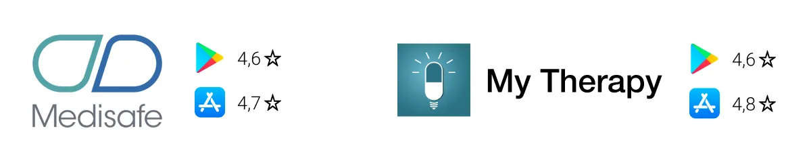
SWOT profiles
Medisafe
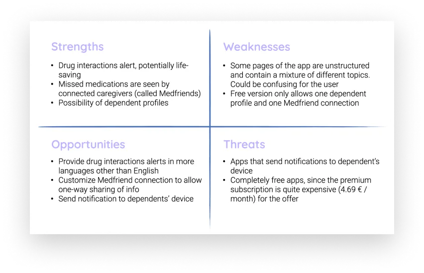
My Therapy
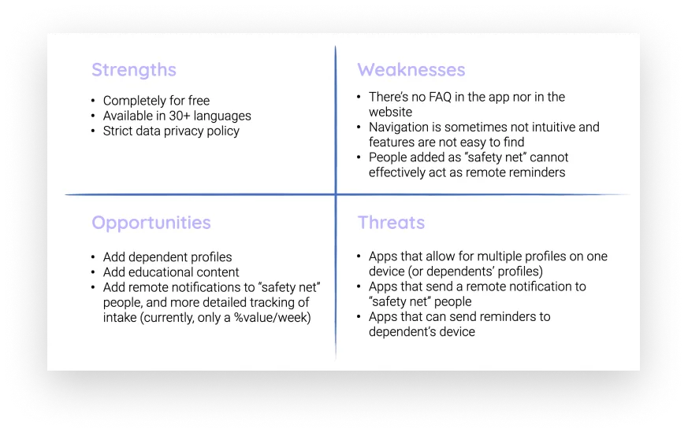
User Research
In order to gain a deeper understanding of caregivers and the dependents they care for, I reached out to potential users to learn about their goals and needs when it comes to regularly taking medications. I was particularly interested in exploring the role that friends and family play in supporting medication adherence.
I first created a user survey to gather initital information from a large number of participants. The survey was a total of 14 questions sent out to 125 participants.
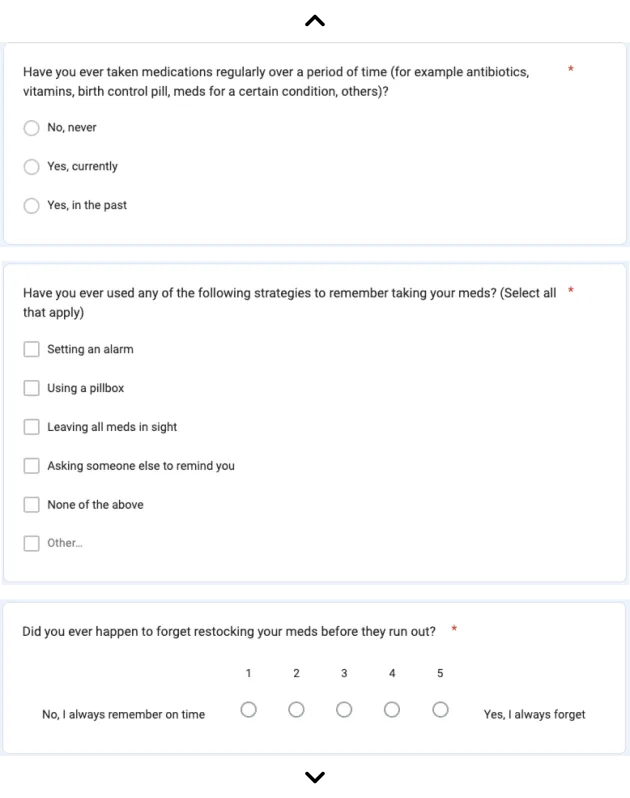
After consolidating the results, the survey's key insights were as followed:
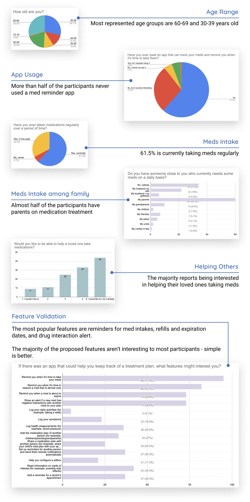
User Interviews
Using the findings generated from my spreadsheets and charts, I drafted an interview script and narrowed down to 5 participants to interview one-on-one. I wanted to find out any recurring patterns related to forgetting to take medications, as well as to understand the strategies, experiences, and frustrations associated with daily medication management. Additionally, I asked participants about their experiences with having someone close to them on a medication plan: were they actively helping? If so, how? If not, why?
After my interviews, I used affinity mapping to make sense of the abundance of information gathered. This process generated insights that could assist me in refining the direction of my future designs.
 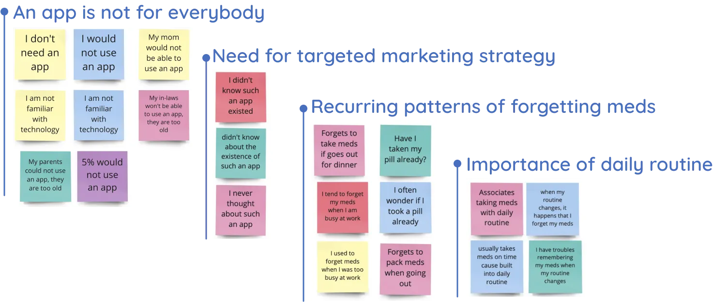
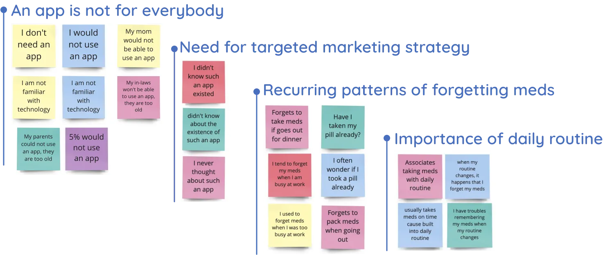
User Personas
I created 3 user personas with characteristics that are supported by the key findings from my user research. Each persona represents a specific group of users and gives voice to their different needs. The personas help me to empathize with users, prioritize features, and make design decisions that are based on real data collected from actual potential users.
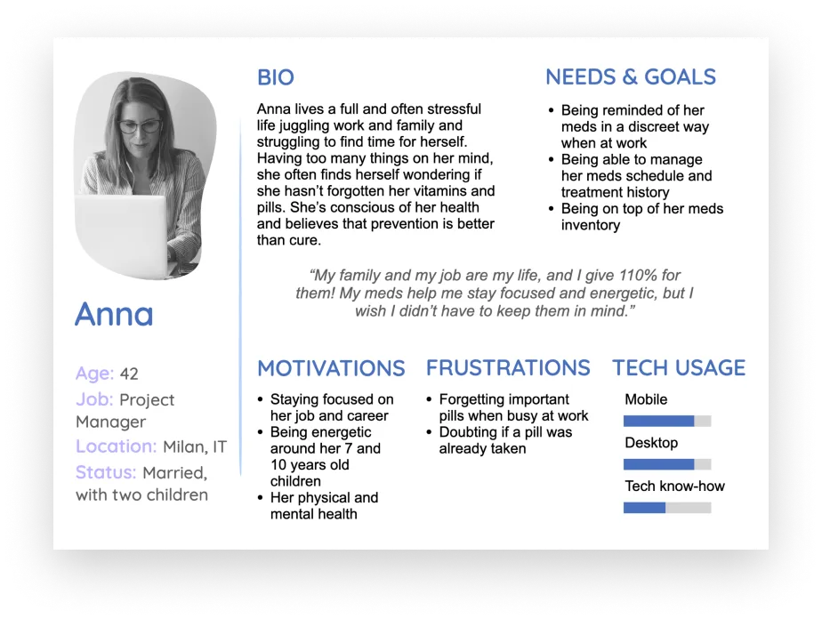
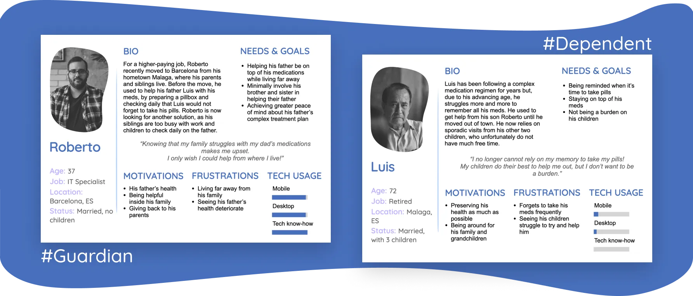
User Journeys
With my user personas in mind, I went on to consider the various scenarios they might encounter while trying to achieve a specific goal using Med Aid. By visualizing this process using a journey map, I was able to identify specific tasks, thoughts, and emotions of each persona. This led to novel ideas such as incorporating a barcode scanning feature to streamline the medication creation task.
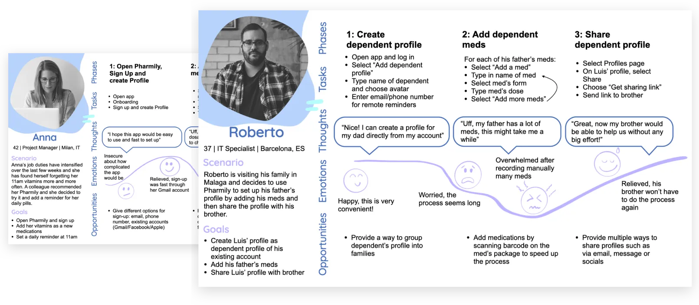
User Flows
Next, I focused on relevant user stories to create user flows. These user flows helped me identify key components of the app and understand how users would interact with it. This process led me to making several critical decisions like deciding to split the sign-up and profile creation into two steps. This change was made to highlight the profile creation task better and create a parallet between creating a personal profile and a dependent profile.
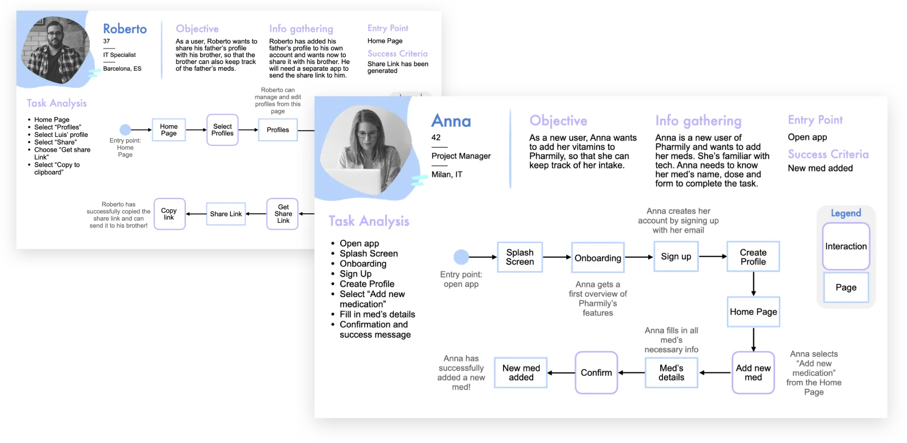
Wireframing Evolution
Below, you can see the evolution of my designs for adding a new medication, from paper wireframes to digital:
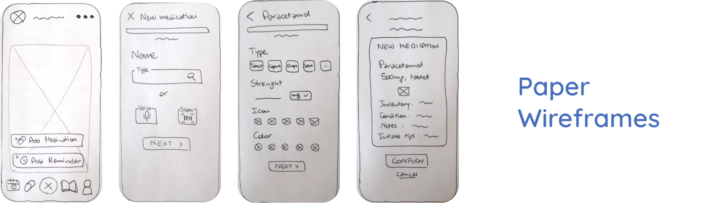
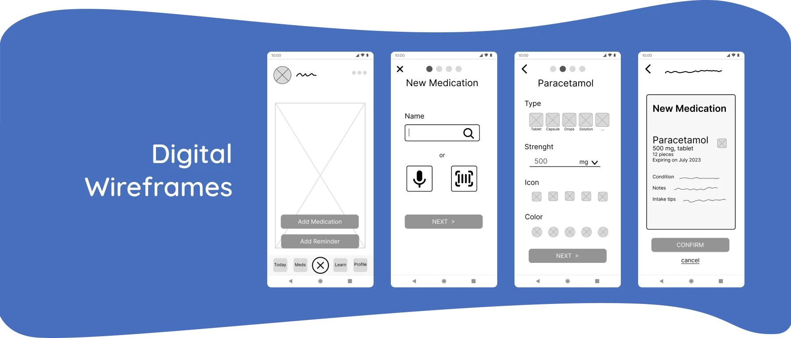
Usability Study
To test the usability of my prototype with potential users, I prepared 4 scenario tasks centered around the most important features of the app: (1) onboarding, sign-up, and profile creation; (2) adding a new medication; (3) setting an intake reminder; and (4) creating a dependent profile. I conducted 6 moderated remote tests, each lasting approximately 40 minutes.
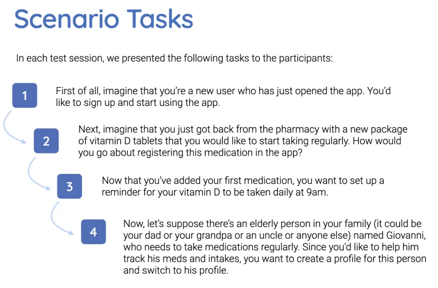
Analyzing Results
Although all participants were able to successfully complete the tasks, I received valuable feedback on errors and pain points. I organized the feedback into an affinity map, categorizing observations, positive and negative quotes, and errors. Next I transferred this information into a spreadsheet to prioritize issues and plan for next steps.
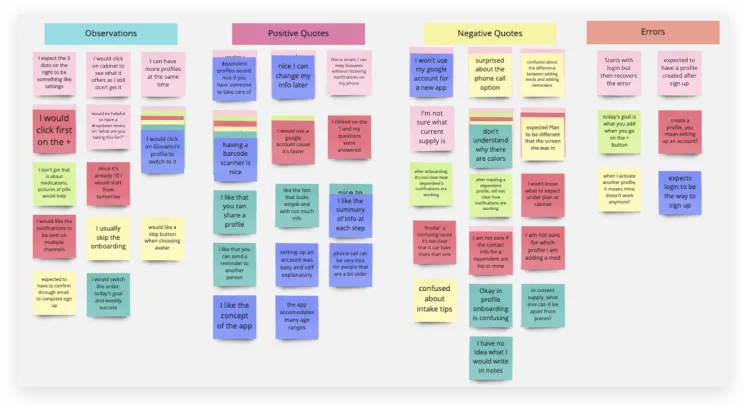
I decided to prioritize 5 issues that were either errors (of varying severity levels) or problems encountered by most participants. For example, I improved the bottom navigation bar by adding a visual indicator to highlight the selected page, and I made labels and copy more intuitive.
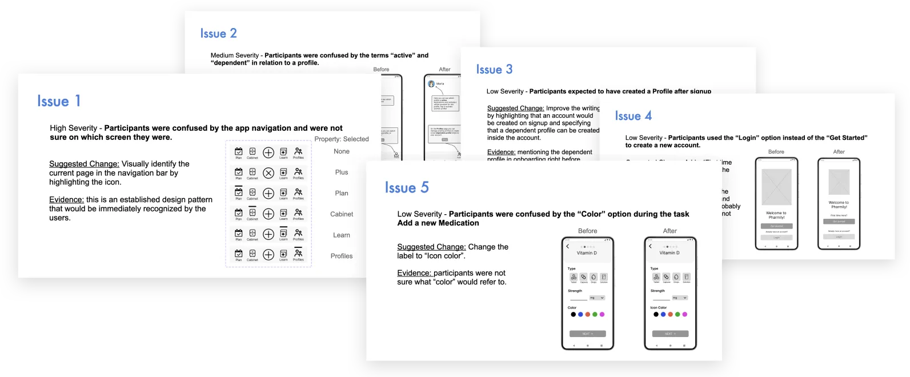
High Fidelity Mockups
The following are a sample of the higher fidelity mockups that were created after my usability study.
Onboarding
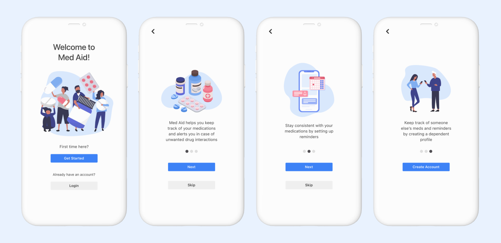
Account Creation
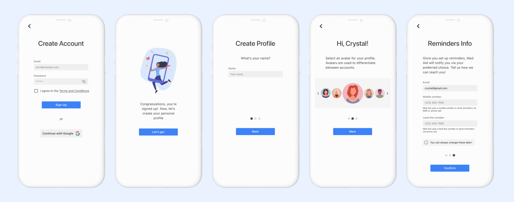